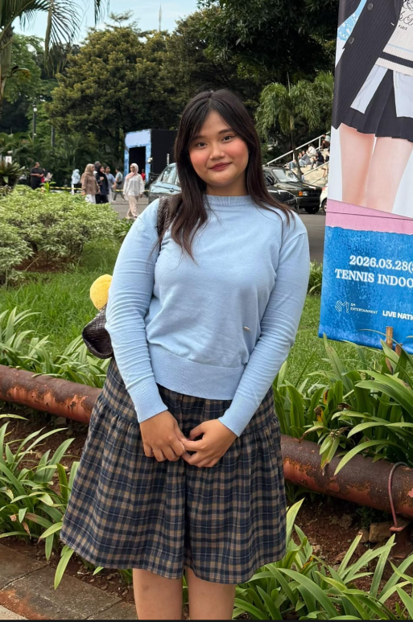

Fatihah Sahda Farras
Leader & Lead Rizzearcher
A dedicated high school student at SMA Islam Harapan Ibu with a deep passion for science. Actively involved in student organizations and various competitions while consistently maintaining strong academic performance. Possesses strong leadership, discipline, and a deep scientific curiosity.